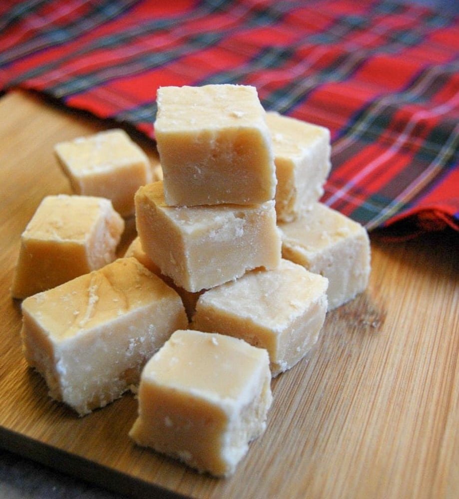

Description
The Scottish tablet is generally eaten as a dessert or snack. They have a
slightly grainy texture. They're sweet, buttery, and they melt in your
mouth. Some of the best tablets are infused with Scotch Whisky for an
added bite or flavor. The tablet can be likened to many other countries
type of fudge.
Ingredients:
- 2lbs Caster Sugar
- 2 cups Full-Fat milk
- 2 tbsp golden syrup
- 4 oz butter
- 4 tbsp Whisky(Optional)
Directions:
-
On low heat, slowly heat the sugar, syrup, butter and milk in a large
heavy bottomed pan until the sugar disolves.
- Add the whisky
- Bring to a boil, until the temperature reaches around 240 degrees
- Remove from heat
- Beat the mixture until it is grainy
- Pour into pan or Swiss roll tray
- Leave to cool
- Cut into desired portions
- Can store in an airtight container for up to 1 month